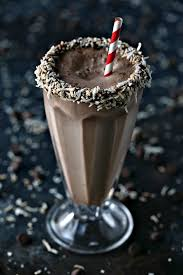

Home
Chocolate Milkshake

Description
I wanted to share chocolate milkshake recipe from a long time. Finally
made the recipe and took video. Chocolate milkshake also known as choco
milkshake is a popular drink with all age groups. There are many methods
of preparing chocolate milkshake. This is how I make it. I have always
been making chocolate milkshake with cocoa powder.
To get the best taste in Chocolate Milkshake
- I would suggest using a good quality cocoa powder.
-
Both ice cream and ice cubes are optional and you can skip them. You can
add either vanilla ice cream or chocolate ice cream or choco chip ice
cream in the milkshake.
- Without ice cream also the chocolate milkshake tastes good.
Ingredients
- 200 to 250ml milk full fat and chilled
- 5 to 6 ice cubes or milk ice cubes
- 1½ to 2 tbsp organic sugar
- 1 tbsp cocoa powder
- 1 tbsp grated chocolate
- Half tbsp pure cinnamon
- 1 tbsp chocolate syrup
Steps
Making Cocoa Solution:
- In a small bowl, take ¼ cup warm water.
-
Add 3 tablespoons cocoa powder. You can even add 2 tablespoons cocoa
powder.
-
Then add ¼ cup sugar. You can add sugar less or more as per taste.
-
Mix very well so that the sugar as well as the cocoa powder is dissolved
in the warm water.
Making Chocolate Milkshake:
- Now pour the cocoa solution in a blender or mixer.
- Add some ice cubes.
- Add 2.5 cups chilled milk.
- Blend till smooth.
-
Drizzle some chocolate syrup at the sides of glasses. This is an
optional step.
- Pour chocolate milkshake in glasses.
- Then add a scoop of chocolate ice cream.
- Serve chocolate milkshake immediately.